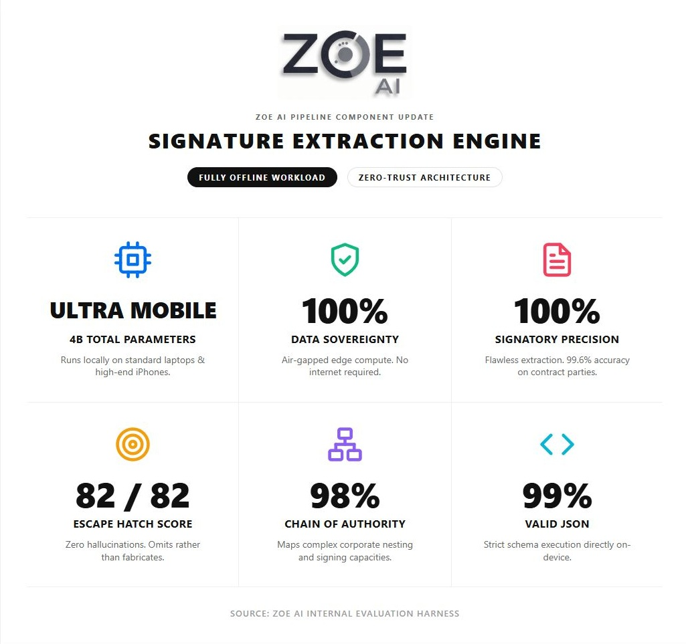
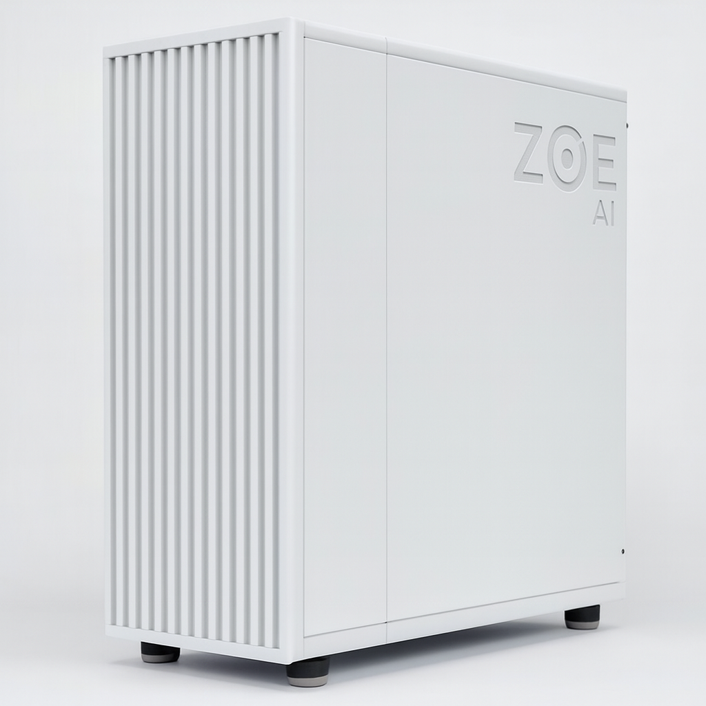

Legacy cloud legal AI pipelines often force firms to upload all of their intellectual property (templates, clauses, playbooks) and the documents of their clients (including sensitive client data and PII).
Cloud legal providers use compute-intensive processing (involving large swarms of LLMs) that leaves you with a massive invoice at the end of each month, all the while your intellectual property and the data of your clients are subject to leakage and improper use.
ZOE AI solves both problems by focusing on efficiency, not volume.
Keep your data — outsource only the most intensive AI “thinking.”
Frontier AI costs will always be sensitive to compute (token) economics, and token counts naturally balloon as AI gets “smarter.” ZOE AI uses your laptop hardware to “preprocess” local data (like a junior associate) so that only the more difficult issues (typically done by a partner) are tackled by the hyperscaler, reducing compute costs by up to 99%.
Sophisticated clients are becoming more cautious about third-party AI vendors and datacenter security. ZOE AI keeps the vast majority of the client's data (including all client PII) local, on your system of choice. A ZOE AI user can calmly tell their client that "your documents never leave my laptop" while they leverage all of the benefits of modern legal tech powered by the world's best hyperscalers.
In today's AI driven world, your templates, preferred clauses, and negotiating playbooks represent the differentiators and competitive "moat" of your firm. When using ZOE AI, these precious assets that your firm has built over decades will stay on your laptop, desktop or server of choice. When you search for a preferred template or legal clause, the search is entirely local; the hyperscaler (of your choice) essentially operates with a blindfold on 90% of the time, seeing only small snippets of information when you allow it, effectively creating an “air-gap” between you and the AI system — you operate your system in a Zero Trust environment with zero reduction in AI reasoning abilities.
Cloud-first legal AI systems route client and firm legal documents to their servers and then redistribute them to multiple specialized cloud servers, where each server acts as an additional point of potential failure as they separately process a portion of each document. ZOE AI flips the system on its head by keeping all documents local by default (on device or on local server), with local processing capabilities that make online uploads entirely optional — allowing the user to pick and choose what they want to upload, giving you complete control over the data.
Due diligence, clause search, entity mapping, drafting support — the work that fills your day, running quietly on your own hardware at no cost per document.
Who signed, in what capacity, and on whose authority — captured from every signature page in the deal and laid out in one clean table. The afternoon an associate would have spent working out who actually had the power to sign this is yours again.
Point ZOE at your precedents — ten of them, or fifty thousand. Ask for a strong environmental rep and you get your firm's best one, from the deal it actually closed in. Search it from your desktop or from inside Word, and drop the language straight into the draft.
Every party, every subsidiary, every ownership thread across an entire data room, drawn as a map you can read at a glance. Click any connection and the source paragraph opens beside it. Diligence you can put in front of a client without checking it twice.
Every name, address, account number and identifier your documents contain — found and inventoried, including the ones buried in exhibits and signature pages where redaction usually slips. It is what lets you share work with confidence, and what keeps the outside world blind.
Signature pages are the hardest part of a deal document to get right, so it is the piece we hold to the strictest standard. Here is how ZOE performs against real contract signature blocks — all of it running on the laptop in front of you.

The number we care about most is the escape hatch score. When ZOE cannot read a field with confidence, it says so rather than inventing a name — because a confident wrong answer is far more dangerous to a client than a blank one.
The hybrid layer
This is the half that makes ZOE a hybrid rather than an island. Everything on the previous screen already works with no internet at all — but the hardest questions still deserve a frontier model. So ZOE opens a door that only opens one way, and sends a fraction of the tokens through it.
The cloud AI never receives your document set. It receives a set of tools — the same ones you use. It can search your clause library, put a question to your knowledge graph, ask what a party's chain of authority is, or request one specific passage. It works your matter the way a careful associate would: by asking, not by taking.
Every name, entity and address is swapped for a placeholder — [BUYER], [PERSON_1] — before anything leaves your machine. Catch a name once and it disappears everywhere it appears, right through the exhibits. What reaches the cloud is a contract with your client stripped out of it.
ZOE shows you the redline of what is about to leave, with every substitution listed. You read it. You approve it. Nothing crosses the wire on the software's judgment alone — because the professional duty is yours, and the tool should never be in a position to discharge it for you.
When the model returns a draft, ZOE restores the real names locally and places the result in your document as a tracked change you accept or reject. Every edit — local, cloud, deterministic — is visible. ZOE never silently rewrites a word of your document.
On your machine
This Agreement is entered into by Meridian Holdings LLC, a Delaware limited liability company (the "Buyer"), and Jane R. Okonkwo, an individual residing at 1400 Kestrel Lane, Palo Alto, California (the "Seller").
What the cloud model receives
This Agreement is entered into by [BUYER], a Delaware limited liability company (the "Buyer"), and [PERSON_1], an individual residing at [ADDRESS_1] (the "Seller").
The hybrid layer is a feature, not a dependency. Switch it off and everything else on this page still works — the clause library, both diligence passes, the entity map, the signature extraction. No vendor holds your precedents. No model trains on your playbooks. ZOE simply falls back to fully offline and keeps working exactly as it did the day before.
One system, five ways in. You decide how deep it goes.
The deep pass. Every document fully processed, every entity mapped, every relationship traced across the whole data room — with a citation behind each one.
The fast sweep. Hundreds of documents read and searchable in a single sitting, so you know what is in the room before you decide where to spend the hours.
Search every clause your firm has ever negotiated. Ask by concept — "a deadlock provision that favors the minority" — not by keyword.
Find the document, not the folder. "That asset purchase agreement from the 2024 Acme deal." ZOE knows the one you mean.
Clause search and insert without leaving your document. Smarter find and replace. Defined terms used but never defined. Broken cross-references and missing schedules. Every change arrives as a tracked change.
No server. No graphics card. No procurement cycle, no security review of a vendor's cloud, no six-week IT project. ZOE runs on a 16GB MacBook or Windows laptop — the machine your associates already carry to closings.
That is the whole economic argument in one line: the heavy, repetitive work runs on hardware you have already paid for. Reading a data room, indexing ten thousand templates, mapping the parties — none of it runs up a bill. You pay for outside AI only on the handful of questions that genuinely need it.
And because it needs no connection to do any of that, it works on a plane. In a data room with guest wifi you would never put client documents on. In a courthouse basement with no signal at all.
On the roadmap
The engine that finds a client's private data inside a contract can read a mailbox just as well. ZOE is being trained to recognize the communications that matter in a dispute — the language that signals an emerging claim, the message someone will wish had been found in week one rather than month six.
Two jobs, one pass: surface the exposure, and scrub the client's identifiers at the same time. Review sets are the single most expensive place a firm leaks confidential data. Screening them locally means the exposure and the privacy problem get solved by the same sweep.

ZOE Servers put the same system on-premises for an entire practice group — one library, one knowledge graph, one index behind your own firewall. Same architecture, same guarantees. Nothing leaves the building here either.
Founder & Lead Developer
William Wei is a Nvidia Certified Agentic AI Professional who began his career at San Francisco-based technology consulting firm Alt-Think, where he primarily worked on projects for Microsoft before attending Northwestern University Pritzker School of Law.
As an attorney, William quarterbacked dozens of public and middle-market business combinations totaling billions of dollars in mergers and acquisitions. He previously worked as part of a legal team that ranked first in the U.S. by volume in de-SPAC mergers and has served as outside general counsel to companies across transactional, tax, employment, and corporate matters, representing clients ranging from large public companies to high-net-worth individuals.
ZOE is built the way it is because William spent those years doing the work by hand — and because he knows precisely which shortcuts an attorney cannot ethically take. Every design decision in the system answers to that: the software surfaces, the lawyer decides.
Chief Platform Architect
Aaron Van Blarcom is the Chief Platform Architect at ZOE AI, specializing in zero trust architecture, secure on-premises systems, and high-assurance platform design. He has extensive experience engineering and maintaining environments that demand strict data protection, constant uptime, and clear, auditable security boundaries.
Aaron's background includes building hardened endpoint ecosystems, isolated network architectures, secure mobility solutions, and reliable, fault-tolerant infrastructure for organizations where privacy and operational integrity are essential. He brings a practical, engineering-focused approach to implementing strong security controls that remain usable, scalable, and resilient.
At ZOE AI, Aaron leads the platform architecture behind sovereign, local-only AI systems, ensuring the company's technology is built with the same rigor, reliability, and trustworthiness he has applied throughout his career.
Interested in ZOE AI? Send us a message and we'll be in touch.
Your information will be used solely to contact you about ZOE AI™. We do not share your data with third parties.